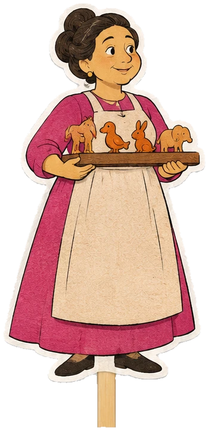

Lo que he leído, sobre la mesa.
Toca lo que te llame la atención.



Cien años de soledad
reseña · oct 2026
siete generaciones y dos nombres
siete generaciones y dos nombres
La medición del mundo
cuaderno · sep 2026
dos genios y medio planeta
dos genios y medio planeta
Don Quijote de la Mancha
fraseario · nov 2026
ocho frases y una falsa
ocho frases y una falsa
ahora leyendo →Por quién doblan las campanas38 %, tres días en la sierra